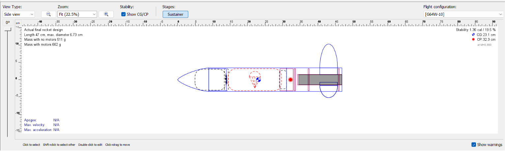
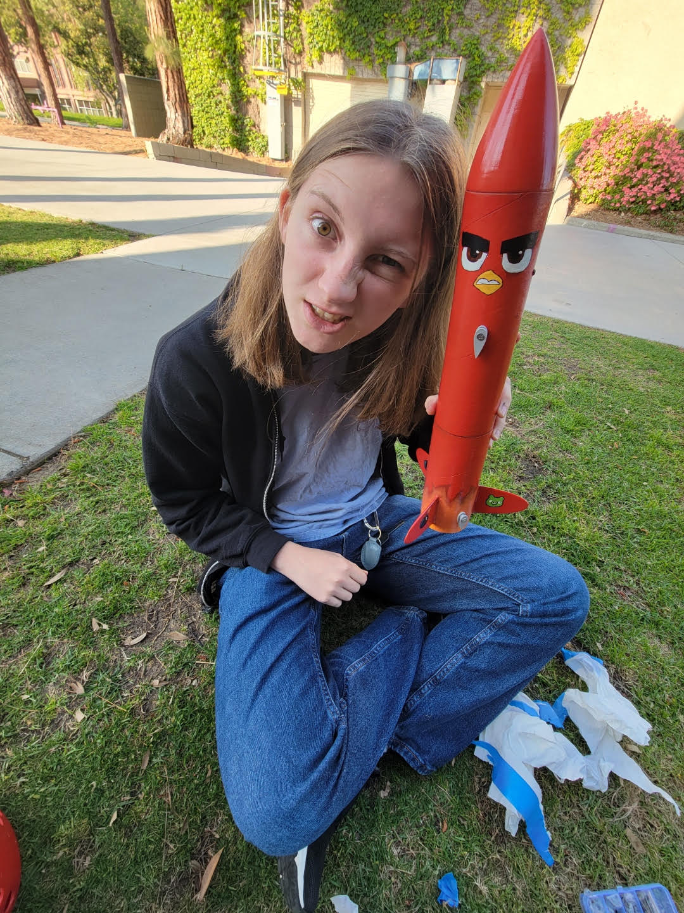
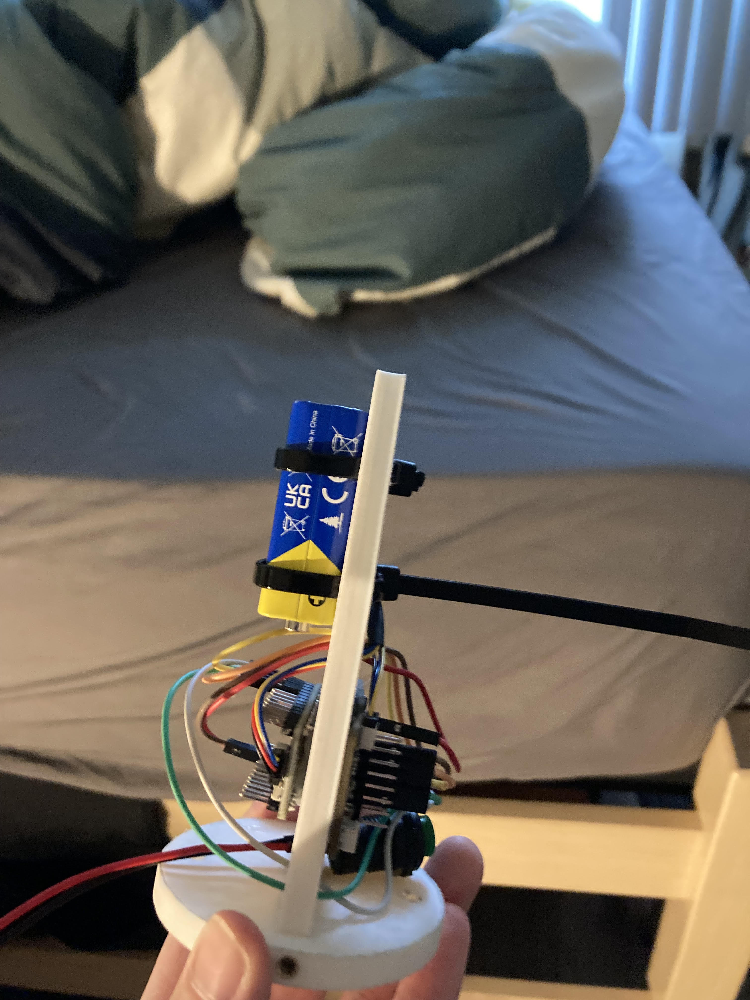

PROJECT 03
Small Rocket Competition
Objectives
Design, build, and prepare a small rocket with provided materials to compete against other teams. Apply fundamental rocketry principles of aerodynamics, stability, avionics, recovery, structural integrity, and flight performance. Collaborate within team to optimize design and build rocket before launch deadline.
Outcomes & Contributions
This project gave me the opportunity to work through the engineering process with a small team to develop a sucessful rocket from initial design decisions through fabrication and testing. I contributed heavily to our OpenRocket plan and calculated our Apogee to be 2200ft. I designed a custom 3D-printed avionics bay to mount into our nosecone, saving weight and space in our body tube for the parachute and bulkheads. I also coordinated the team to prepare our PDR and CDR presentations.
Technical Details & Skills
Rocketry, OpenRocket, SolidWorks, Aruduino, 3D-printing, time management, teamwork, and leadership